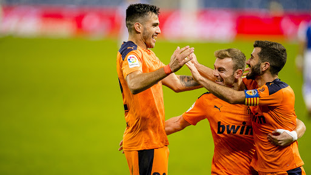

-
Late Drama Lifts Valencia Over Real Sociedad
by Charlie Tuley - September 29, 2020
|
ctuley@umich.edu

Final Score: Real Sociedad 0-1 Valencia
Valencia beat Real Sociedad courtesy of Maxi Gomez’s 75th-minute goal, with the Basque side having their 95th-minute equalizer ruled out by V.A.R. due to a handball. Here are my five key takeaways:
1. Valencia’s Win Goes Against Flow Of The Game
Real Sociedad dominated this game, holding 66% possession, taking 11 shots (3 on target) and earning 9 corners. They should have won this game, as they controlled the match from start to finish. However, it was Valencia who would score the only goal of the match, when they caught Real Sociedad on a breakaway. Daniel Wass (who is finally playing in the midfield again) played a fantastic ball across the field to Jose Gaya, who would deliver the cross for Maxi Gomez to finish. After the goal, Real Sociedad kept possession for the rest of the match as they searched for a goal. They were throwing all of their players into the box in the hope that one of their crosses would find the back of the net, and they finally broke through in the fifth minute of extra time, but it ended up being ruled out by V.A.R. due to a handball on the assist (which was a poor call, as Artiz Elustondo’s hand was at his side, and he was pushed into the ball by a Valencia player, so he couldn’t control his actions).
2. Despite Scoring, Valencia’s Offense Must Improve
Valencia had only one shot in Real Sociedad’s penalty area today, and it was the only goal of the match. They are in desperate need of a creator after the loss of Dani Parejo (I though Kang-in Lee would step into the role, but Javi Gracia has him playing as a second striker with Maxi Gomez, a role that he looks good in, but he often goes unsupported due to the lack of wingers in Valencia’s squad). Their insistence to continue to play the 4-4-2 with Kondogbia and Wass (or another defensive midfielder) as the two central midfielders are really hurting them, as they don’t get the ball forward quick enough, and neither of them is fast enough on the ball to cause defenses any problems. If Valencia’s rocky start to the season (win over Levante, loss to Celta Vigo, draw against Huesca) is anything to go by, Los Che are not in for a good year if they can’t sign someone who can link the midfield to the forwards on a consistent basis.

3. Valencia’s Backup Defense Gets The Job Done
With Eliaquim Mangala and Gabriel Paulista both out injured and Daniel Wass back in midfield, I didn’t know how backups Hugo Guillamon, Moussa Diakhaby, and Thierry Correia would do against a Real Sociedad team that put 3 goals past newly-promoted Elche last weekend. Needless to say, they were all solid, and they kept Valencia’s first clean sheet of the season. Correia, in particular, was fantastic, and Javi Gracia will be very happy that he can finally feel comfortable playing Wass in his traditional midfield role.
4. Real Sociedad Are Sorely Missing Martin Ødegaard
In my article about Real Sociedad’s match against Real Madrid, I talked about how I believed that David Silva could be the perfect replacement for Martin Ødegaard, who had 4 goals and 6 assists for Sociedad last season. After watching a few of Sociedad’s matches, I don’t think that Silva can replace Ødegaard, as he isn’t playing the same position that Ødegaard did. Silva plays much deeper, as he comes back to receive the ball from his defenders and then moves it upfield himself. Ødegaard played almost as a false nine, sitting behind the striker, and making runs wide to create space for the other forwards. While I believe that Silva should continue to start, I think that Sociedad needs to find a player to fill the role that Ødegaard left. Maybe Mikel Oyarzabal could be tried there, he certainly has the soccer IQ and technical abilities to play that position.
5. Real Sociedad Continues To Underperform
Since the restart, Real Sociedad have looked much different from the dangerous team that they were in the first half of the 2019/2020 season. Their finishing has worsened, and they are losing games that they should be winning (Valencia is a prime example). They lack a clear style, and most of the time they end up tossing crosses into the box and praying that someone will find the back of the net. This season, they currently have 5 points from 4 games, a tally that should be much higher. Depending on how his team does in the Europa League Imanol Alguacil could find himself on the hot seat soon if his team fails to get favorable results.